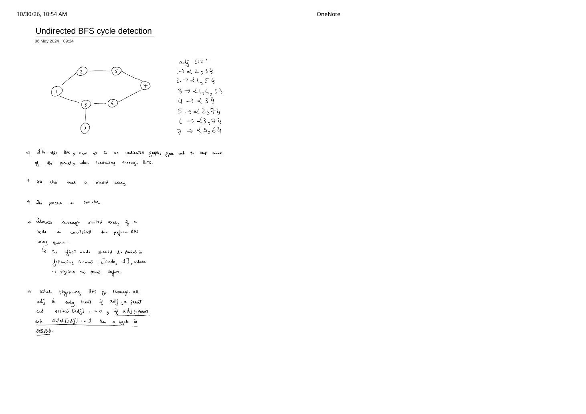

Undirected Graph Cycle Detection via BFS: Wavefront Collision with [node, parent]
Expanded from handwritten competitive coding study note: 02_Undirected_BFS_cycle_detection.pdf · View original handwritten page
1. Problem Statement & Wavefront-Collision Intuition
Just like Undirected DFS Cycle Detection, Breadth-First Search must distinguish a harmless U-turn back to the immediate parent from a genuine cycle—but the geometry of how BFS discovers the cycle is strikingly different:
- DFS walks sequentially around the entire loop $1 \to 2 \to 5 \to 7 \to 6 \to 3$ until the head bites its own tail at $1$.
- BFS launches two simultaneous wavefronts outward from vertex $1$—top branch $1 \to 2 \to 5 \to 7$ and bottom branch $1 \to 3 \to 6 \to 7$—which race around opposite halves of the loop and collide halfway across at vertex $7$!
Handwritten BFS Cycle-Detection Rules (From 02_Undirected_BFS_cycle_detection.pdf)
- Allocate
visited[V] = {0}and iterate through all vertices $0 \dots V - 1$ to cover disconnected components. - For each unvisited component root
start, markvisited[start] = 1and push[start, -1]into FIFO queue $Q$ (-1signifies no parent beforestart). - While $Q$ is non-empty, pop
[node, parent]and scan everyadjinadj[node]:- If
visited[adj] == 0: markvisited[adj] = 1on enqueue and push[adj, node]. - Else if
adj != parent(sovisited[adj] == 1 && adj != parent): another BFS branch already claimedadj—cycle detected, returntrue!
- If
2. Complete Adjacency List & Queue Trace on the 7-Node Graph
7 from parent 5; when bottom wavefront (amber) pops (6, 3) and inspects adj = 7, it finds visited[7] == 1 and 7 != 3!Popped [node, parent] |
Neighbors Inspected | Queue $Q$ After Pop | Visited Set |
|---|---|---|---|
| Init | Seed component root | [(1, -1)] | {1} |
(1, -1) | Enqueue (2, 1), (3, 1) | [(2, 1), (3, 1)] | {1, 2, 3} |
(2, 1) | Skip parent 1; enqueue (5, 2) | [(3, 1), (5, 2)] | {1, 2, 3, 5} |
(3, 1) | Skip parent 1; enqueue (4, 3), (6, 3) | [(5, 2), (4, 3), (6, 3)] | {1, 2, 3, 4, 5, 6} |
(5, 2) | Skip parent 2; enqueue (7, 5) | [(4, 3), (6, 3), (7, 5)] | {1, 2, 3, 4, 5, 6, 7} |
(4, 3) | Skip parent 3 (leaf finishes) | [(6, 3), (7, 5)] | {1..7} |
(6, 3) | Skip 3; check adj = 7: vis[7]==1 && 7 != 3 | Cycle Detected → return true! | {1..7} |
3. Clean C++ Implementation + Method Comparison
// Undirected Graph Cycle Detection via BFS — C++
class Solution {
bool bfsDetect(int start, const vector<vector<int>>& adj, vector<int>& vis) {
queue<pair<int, int>> q;
vis[start] = 1; // Mark visited BEFORE enqueueing
q.push({start, -1}); // -1 signifies root has no parent
while (!q.empty()) {
auto [node, parent] = q.front();
q.pop();
for (int adjNode : adj[node]) {
if (!vis[adjNode]) {
vis[adjNode] = 1;
q.push({adjNode, node});
} else if (adjNode != parent) {
// Visited by a different BFS branch -> cycle!
return true;
}
}
}
return false;
}
public:
bool isCycle(int V, const vector<vector<int>>& adj) {
vector<int> vis(V, 0);
for (int i = 0; i < V; ++i) {
if (!vis[i]) {
if (bfsDetect(i, adj, vis)) return true;
}
}
return false;
}
};Bonus Contest Perspective: BFS vs. DFS vs. DSU on Undirected Cycles
- BFS vs. DFS: Identical $\mathcal{O}(V + 2E)$ worst-case complexity; BFS is naturally iterative (zero stack-overflow risk) and is also the engine behind finding the Shortest Cycle (Girth) of an undirected graph in $\mathcal{O}(V(V + E))$!
- Disjoint Set Union (DSU): When edges arrive online as a flat edge list $(u, v)$ (as in LeetCode 684 Redundant Connection), checking
if (!dsu.unite(u, v)) return {u, v};detects undirected cycles dynamically in $\mathcal{O}(E \cdot \alpha(V))$ without building an adjacency list!
4. Complexity Proof & Key Edge Cases
- Time Complexity: $\mathcal{O}(V + 2E) = \mathcal{O}(V + E)$ — Each vertex is enqueued and popped at most once ($\mathcal{O}(V)$), and its adjacency list is scanned once ($\sum_u \deg(u) = 2E$).
- Space Complexity: $\mathcal{O}(V)$ —
vis[V]plus at most $V$ pairs in queue $Q$. - Odd vs. Even Cycle Collision Subtlety: On an even cycle (like length $6$ above), the two wavefronts claim the antipodal vertex
7one after the other; on an odd cycle (like triangle1 - 2 - 3 - 1), both2and3sit at depth $1$, so popping(2, 1)immediately seesvis[3] == 1across horizontal cross-edge(2, 3). Both cases satisfyvis[adj] == 1 && adj != parent!
From the Handwritten Notes
View original handwritten page — Undirected Graph BFS Cycle Detection (Page 1)


02_Undirected_BFS_cycle_detection.pdf: 7-vertex graph & explicit adjacency list, seeding [node, -1] in the queue, and detecting cycles via adj != parent && visited[adj] == 1.